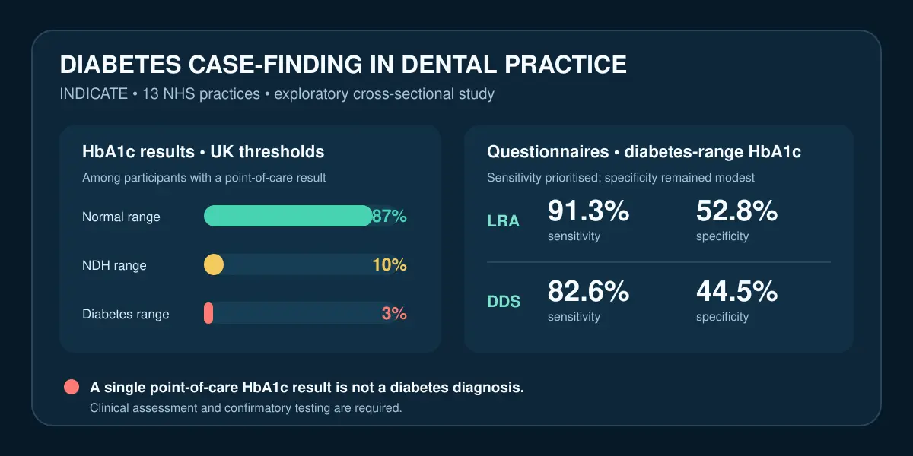

Bulgular, diş kliniğinin riskli kişileri bulmak için bir temas noktası olabileceğini; tek bir bakım noktası HbA1c sonucuyla diş hekiminin diyabet tanısı koyabileceğini göstermiyor. LRA ve DDS yüksek HbA1c'si olan bazı kişileri kaçırdı ve çok sayıda yanlış pozitif üretti; ABD eşikleri prediyabet tahminini yüzde 10'dan yüzde 32'ye çıkardı. Sonuç eşik tanımına, veri tamlığına ve tıbbi/laboratuvar doğrulamasına bağlıdır; çalışma ulusal programın sağlık sonuçlarını veya maliyet etkinliğini test etmedi.

Bir dakikalık özet
Zehra Yonel, Joie Ensor, Thomas Dietrich, Laura J. Gray ve Iain L. C. Chapple, INDICATE çalışmasının sonuçlarını 19 Ekim 2026'da British Dental Journal'da yayımladı. Amaç, bilinen diyabeti olmayan diş hastalarında yüksek HbA1c sıklığını tahmin etmek ve iki risk aracını değerlendirmekti: Diabetes Risk Assessment in Dentistry Score (DDS) ve Leicester Risk Assessment (LRA). Bu çalışma randomize bir deney ya da sonuçları izleyen bir tanı programı değil, keşif amaçlı kesitsel bir araştırmaydı. [1]
Birleşik Krallık eşikleriyle HbA1c sonuçlarının yüzde 87'si normal, yüzde 10'u 'diyabetik olmayan hiperglisemi' yani prediyabet ve yüzde 3'ü diyabet aralığındaydı. Bu yüzde 3 kesin tanı değildi: ölçüm bakım noktası cihazıyla yapıldı ve yüksek sonuç uygun tıbbi değerlendirme ve testlerle doğrulanmalıydı. Çalışma diş kliniğinde risk bulmanın mümkün olabileceğini gösteriyor; rutin diş taramasının hasta sonuçlarını iyileştirdiğini göstermiyor. [1] [2]
Araştırma nasıl yürütüldü?
On üç NHS diş kliniği, 12 ay boyunca 40–80 yaşındaki kişileri araştırmaya aldı. Kendisinde tip 1 veya tip 2 diyabet bulunduğunu bildirenler, son 12 ayda bilinen prediyabet/diyabet test sonucu olanlar, gebeler ve İngilizce bilgilendirilmiş onam veremeyenler dışlandı. Her katılımcı elektronik DDS ve LRA anketini tamamladı; risk puanından bağımsız olarak herkese bakım noktası HbA1c testi önerildi. Bu yaklaşım yanlış negatifleri ölçebilmek için önemliydi. [1]
Sonuçlar bölümü 809 kişinin alındığını, yaş aralığı dışındaki 8 kişi çıkarılınca 801 kişinin kaldığını söylüyor; özetin verdiği 803 sayısıyla bu tutarlı değil. Ayrıca 54 kişide HbA1c sonucu yoktu. Ortalama yaş 58, katılımcıların yüzde 61'i kadın ve yüzde 85'i beyaz Britanyalıydı. Ortalama BKİ 27,4'tü; yüzde 9 halen sigara içiyor, yüzde 13 tamamen dişsizdi. Bu yapı sonuçların daha çeşitli topluluklara veya diş hizmetine erişmeyenlere genellenmesini sınırlar. [1]
Başlıca sayılar ne anlatıyor?
Birleşik Krallık tanımında 42–47 mmol/mol HbA1c diyabetik olmayan hiperglisemi, 48 mmol/mol ve üzeri diyabet aralığı kabul edildi. Buna göre oranlar yüzde 10 ve yüzde 3'tü. Araştırmacılar Amerikan Diyabet Derneği'nin daha düşük eşiğini uyguladığında prediyabet oranı yüzde 32'ye çıktı ve yalnızca yüzde 65 normal aralıkta kaldı. Bu büyük fark, bildirilen prevalansın sadece örneklemin özelliği olmadığını; seçilen eşiğe de bağlı olduğunu gösteriyor. [1]
Diyabet aralığındaki HbA1c'yi bulmak için LRA yüzde 91,3 duyarlılık ve yüzde 52,8 özgüllük; DDS yüzde 82,6 duyarlılık ve yüzde 44,5 özgüllük gösterdi. Tam model eğri altı alanı LRA için 0,73, DDS için 0,68'di. İlk basamak araçta yüksek duyarlılık yararlıdır; ancak orta düzey özgüllük, yüksek riskli sayılan pek çok kişinin sonraki testte diyabet aralığında olmadığı anlamına gelir. Birleşik prediyabet/diyabet analizinde duyarlılık yaklaşık yüzde 73–75'ti; iki anket de yüksek HbA1c'li herkesin tamamını bulamadı. [1]
Neden tarama tanı değildir?
Yazarlar iki aşamalı bir yol öneriyor: önce test edilecek kişi sayısını daraltan bir anket, ardından doğruluğu artıran bakım noktası HbA1c ve yüksek sonuç için sevk. NICE da yüksek risk puanı olan yetişkinlere kan testi sunulmasını ve sonraki kararların klinik bağlamda alınmasını öneriyor. Ancak çalışmadaki cihaz anketlerin doğrulanmasında 'referans standart' olarak kullanıldı; hekim tanısının, doğrulayıcı laboratuvar testinin veya HbA1c'yi etkileyen durumların değerlendirilmesinin yerini tutmaz. [1] [2]
DDS'nin 8 ve üzeri eşiği diyabet aralığını saptamada yaklaşık yüzde 5 pozitif öngörü değeri ve yüzde 99 negatif öngörü değeri verdi. Bu örüntü hastalık ilan etmekten çok riski dışlamada işe yarar: pozitif sonuçların büyük çoğunluğu diyabet aralığına karşılık gelmedi. Bu nedenle tek bir puana ya da hızlı ölçüme dayanarak kişiye 'diyabet' etiketi koymak hem bilimsel hem iletişimsel açıdan yanlıştır.
Sınırlılıklar ve kanıt düzeyi
Klinikler tüm Birleşik Krallık diş kliniklerinin rastgele örneği değildi; araştırmaya daha ilgili veya hazırlıklı olabilirlerdi. Uygulama iş akışı klinikler arasında değişti. Kesitsel tasarım yalnızca o andaki durumu gösterdi ve araştırma kaç sevkin doğrulayıcı test, resmi tanı veya daha iyi sağlık sonucu doğurduğunu izlemedi. Bir programın yararını, zararını, kaygı yaratma olasılığını veya maliyetini ölçen bir kontrol grubu da yoktu. [1]
Eksik veri ayrıca önemliydi: tam DDS analizi, çoğunlukla periodontal cep derinliği kaydedilmediği için yalnızca 521 kişide yapılabildi; tam LRA modeli 723 kişide hesaplandı. DDS başlangıçta çeşitliliği sınırlı bir Alman popülasyonunda geliştirilmişti. LRA da rutin diş muayenesinde her zaman kaydedilmeyen bilgiler istiyor. Özet ile ana metin arasındaki katılımcı sayısı farkı da açık tutulmalı. Bu nedenle kanıt düzeyi uygulanabilirlik ve tanısal performans için erken ve sınırlıdır; ulusal program etkinliği kanıtı değildir.
Finansman, çıkar çatışmaları ve pratik mesaj
Çalışma NIHR ve Diabetes UK tarafından desteklendi. Yonel, NICE diyabet rehberi panelindeki ve kuruma uzman danışmanlıktaki rolünü; Chapple ise NHS England standardı ile ilgili çalışmalara ve mesleki atölyelere katılımını bildirdi. Yazarlar diğer akademik ve mesleki desteklerini de açıkladı. Makale bu çalışma için ticari sponsor bildirmiyor ve CC BY 4.0 lisansıyla yayımlandı. [1]
Diş hekimliği açısından dengeli sonuç, diyabet riskini sormanın ve açık bir sevk yoluna sahip olmanın riskinden habersiz kişileri bulma fırsatını artırabileceğidir. Yine de araç seçimi, ekip eğitimi, onam, ölçüm kalitesi, veri güvenliği ve gerçek tıbbi takip erişimi belirleyicidir. Bu araştırma tek başına kişisel tedavi değişikliği veya tıbbi öneri oluşturmaz; olağandışı sonuç uygun sağlık hizmeti içinde değerlendirilmelidir.
Birincil kaynaklar
Açık erişimli makalenin tam HTML metni; yöntemler, sonuçlar, tablolar, tartışma, sınırlılıklar, finansman, çıkar çatışmaları ve CC BY 4.0 lisansı incelendi. Klinik bağlam için NICE'ın tip 2 diyabet riski yüksek kişilerin belirlenmesine ilişkin önerileri de okundu. Yayıncı PDF'sine bu incelemede erişilemedi; dolayısıyla rapor tam HTML metnine dayanır ve bağımsız uzman hakemliği iddiası taşımaz.
Bu yazı genel bilgilendirme amaçlıdır; kişiye özel tanı veya tedavinin yerini tutmaz.